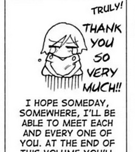

El proyecto de vida ha sido una herramienta fundamental para definir metas claras y concretas que han permitido trabajar de manera enfocada hacia el logro de objetivos a largo plazo. Durante el proceso, se ha desarrollado una mayor conciencia sobre las fortalezas y debilidades, lo cual ha sido de ayuda para superar obstáculos y desafíos.
La planificación y ejecución de este proyecto de vida ha generado un cambio significativo tanto personal como profesional, al proporcionar una dirección clara y una motivación constante para trabajar. Se han adquirido habilidades valiosas y se ha fortalecido la autoconfianza.
En el proceso, ha sido posible alcanzar varios objetivos, como mantener un estilo de vida más saludable, continuar con los estudios en teología, y fortalecer relaciones personales. También manejar el estrés y la incertidumbre de manera más efectiva.
El proyecto de vida ha sido una herramienta útil para establecer objetivos y metas a largo plazo, así como para identificar fortalezas y debilidades. El proyecto ha sido un impulsor importante para alcanzar una vida plena y satisfactoria.
Agradecimiento
Quiero expresar mi agradecimiento a Dios por su guía y protección en mi camino educativo. Además, deseo agradecer a los docentes por su dedicación y esfuerzo en brindarme una educación de calidad. Sus enseñanzas y orientación han sido fundamentales para mi formación académica y personal. Asimismo, quiero extender mi gratitud a mis padres por su amor, sacrificio y apoyo constante en mi proceso de aprendizaje. Su ejemplo y valores han sido una fuente de inspiración para mí y me han ayudado a enfrentar los desafíos con fortaleza y determinación. Estoy muy agradecida por todo lo que han hecho por mí.

Anterior
Proyecto de vida - Genesis Corado
Quinto bachillerato en ciencias y letras en computación